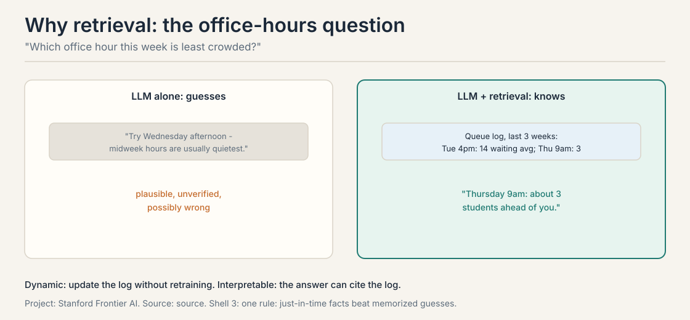
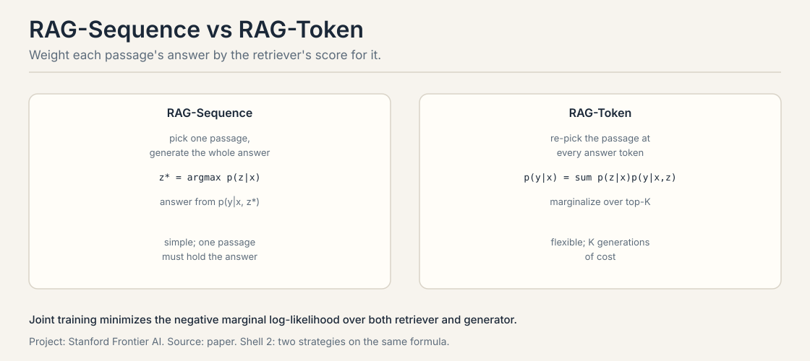
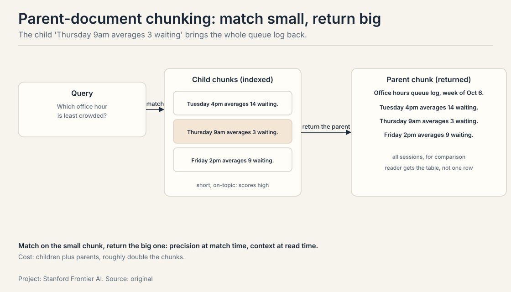
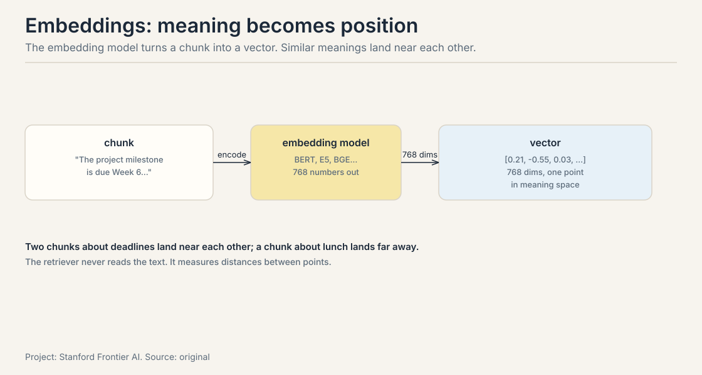
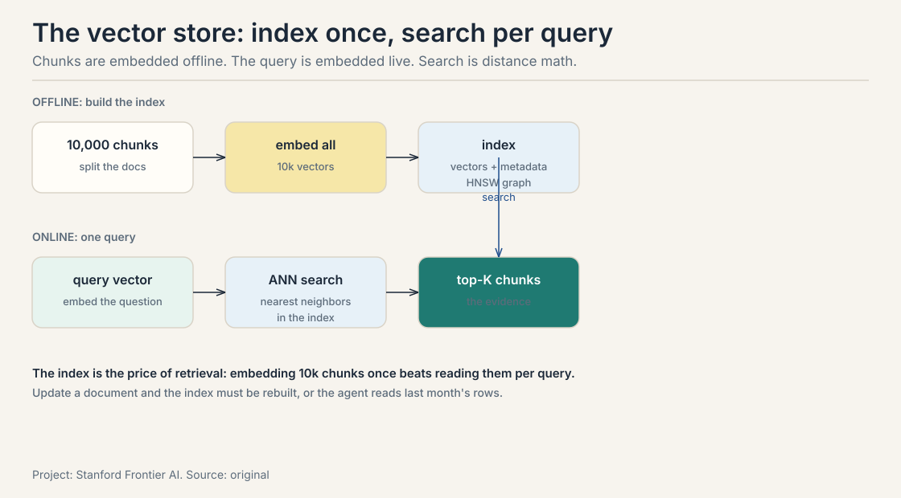
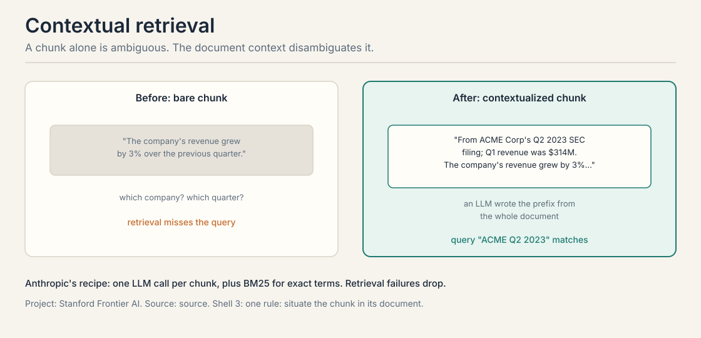
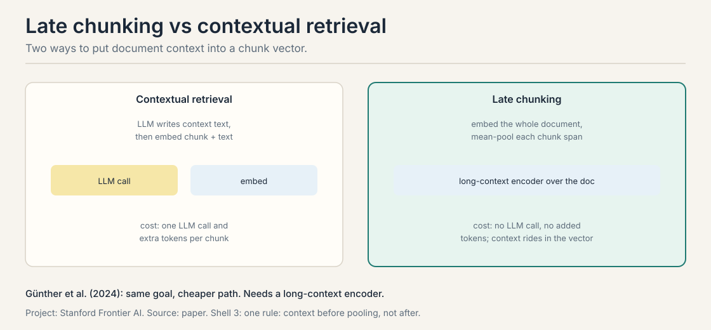
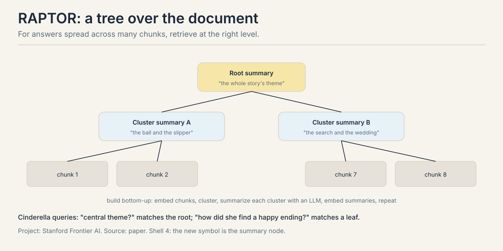

Lecture 3A: RAG, Indexing, and Chunking
The job: “Which office hour this week is least crowded?”
Ask the LLM alone and it answers from vibes: “Try the Wednesday afternoon session. Midweek hours are usually quietest.” Plausible. Unverified. Possibly wrong. The model has never seen the queue log, and it will not admit that.
Now give the agent the queue log first. Retrieved: Tuesday 4pm averages 14 waiting, Thursday 9am averages 3. The answer becomes “Thursday 9am, about 3 students ahead of you.” Specific, sourced, and checkable.

The difference is not eloquence. It is evidence. This chapter builds the pipeline that puts evidence in front of the model at answer time: retrieval-augmented generation, RAG.
First attempt: train on the documents
The obvious fix is to teach the model the queue log: fine-tune on the documents so the facts live in the weights. Then the model answers from memory, no retrieval needed.
Where training breaks
Three cracks, each concrete.
Staleness. The queue log changes every week. Retraining the model every week to learn the new log is absurd: a training run for a changing fact. Retrieval updates by replacing a file. The index is rewritten in minutes. The weights never move.
No citation. A memorized answer cannot point at its source. “Trust me, Thursday is quiet” is the model’s word against nothing. A retrieved answer carries its passage: here is the log line, check it yourself. For office hours the stakes are low. For medical or legal answers they are not.
Lossy memory. Training approximates. The model learns the shape of the log, not its rows. Ask for the exact Tuesday average and you get a reconstruction: 14, or 12, or “about a dozen”. Retrieval returns the row itself, byte for byte.
The lecture’s summary: instead of asking the model to memorize everything, provide the relevant content just in time. Retrieval is dynamic (update documents without retraining) and interpretable (the model can cite passages a human can verify).
RAG vs fine-tuning vs prompting: the decision
The three options are not rivals. They answer different questions.
| Approach | Answers | When it wins |
|---|---|---|
| Prompting | “use this context” | the facts fit in the window and change per query |
| RAG | “fetch the facts” | the facts change, need citations, or exceed the window |
| Fine-tuning | “become the expert” | the knowledge is stable and must shape judgment: tone, reasoning patterns, domain intuition |
The best systems do all three: fine-tune the judgment, retrieve the facts, prompt the format. The mistake is using one for another’s job: fine-tuning the queue log (stale next week), or retrieving the company’s voice (facts cannot teach style).
The key question
What if the model reads the documents at answer time instead of memorizing them?
The retriever-reader framework, built from zero
Open-domain question answering splits into two modules. DrQA (Chen et al., 2017) is the classic. Input: a document collection D and a question Q. Output: an answer string A.
flowchart LR
A["Documents D + question Q"] --> B["Retriever f: top-K passages"]
B --> C["Reader g: answer A"]
The retriever f(D, Q) returns the top-K passages. K is predefined, for example 100. In DrQA it is a fixed TF-IDF sparse module: no learning, just word overlap. The reader g(Q, {P1..PK}) writes the answer from the question and those passages: a neural reading-comprehension model, or today a zero-shot LLM.
The split is the point. Retrieval is a search problem over millions of documents. Reading is a comprehension problem over K passages. Different problems, different tools, one pipeline. And the handoff is the fragile joint: if the retriever misses the evidence, the reader cannot recover. If the reader ignores the passages, the retrieval was wasted. The failure-modes lesson works both.
RAG: weight answers by retrieval
RAG (Lewis et al., 2021) formalizes the pipeline as probability. A retriever p(z|x) returns the top-K passages z for query x. A generator p(y|x,z) writes the answer one token at a time, given the query and a passage. The answer probability marginalizes over passages:
$$p(y \mid x) \approx \sum_{z \in \text{top-K}} p(z \mid x)\, p(y \mid x, z)$$
Each passage’s answer is weighted by how likely the retriever rates that passage. Worked on a two-passage toy:
query: "Which office hour is least crowded?"
passage z1 (queue log): p(z1|x) = 0.7
answer "Thursday 9am": p(y|x,z1) = 0.9 -> 0.7 x 0.9 = 0.63
passage z2 (old FAQ): p(z2|x) = 0.3
answer "Thursday 9am": p(y|x,z2) = 0.2 -> 0.3 x 0.2 = 0.06
p("Thursday 9am" | x) = 0.63 + 0.06 = 0.69
The trusted passage dominates the sum. Training is joint: minimize the negative marginal log-likelihood over both retriever and generator, so the retriever learns to fetch passages that help the generator.
Two variants. RAG-Sequence picks one passage and generates the whole answer with it. RAG-Token re-picks the passage at every token of the answer. Sequence is cheaper. Token is more flexible. The lecture’s retriever is DPR (Dense Passage Retrieval): p(z|x) proportional to exp(d(z)^T q(x)), two BERT encoders, top-K by maximum inner product search. The generator is BART, reading the query and passage concatenated.

RAG beat the baselines on Natural Questions, TriviaQA, WebQuestions, and CuratedTREC by exact match, and won human assessments on Jeopardy question generation. The variants since (Gao et al., 2024 survey) keep the same skeleton: retrieve, weight, generate.
Indexing: the chunk is the basic unit
Retrieval needs one fixed-dimension vector per chunk, plus a similarity metric. Chunking decides what one vector covers. The lecture’s toy: the same grading text, three splits.
Same text, three splits
("Grading. The project milestone is due..."):
fixed-size (50 tokens):
"... The project milestone is | due Week 6, Thursday 11:59pm. ..."
-> "11:59pm" stranded at a boundary
fixed-size + overlap:
"... milestone is due Week 6, | Thursday 11:59pm. ..."
"... due Week 6, Thursday | 11:59pm. Late days may not ..."
-> no sentence lost at a boundary
structure (split on headings):
"Grading -- Milestone: Week 6, Thu 11:59pm. Late days: not allowed."
-> clean, needs structure to exist
Fixed-size chunking segments by token count, typically 100 to 500 tokens. Too small and the vector has no context: it matches everything vaguely. Too large and one vector averages many topics: it matches nothing precisely. Overlap of 10 to 20 percent keeps sentences from dying at boundaries. The fancier options: semantic chunking splits on logical boundaries like sentences and sections. Context-enriched chunking carries metadata or summaries per chunk. AI-driven dynamic chunking uses an LLM to find natural breakpoints.
Start at 200 to 400 tokens with 10 to 20 percent overlap, then measure on your eval set. The most common mistake is chunking without looking at the documents: fixed-size splitting on PDFs with tables, code, or headings shreds the structure the questions need. Read ten chunks by hand before tuning anything.
Recursive splitting: cut on real boundaries
Fixed-size splitting is the floor, not the ceiling. Four upgrades, each fixing a different weakness.
Recursive splitting splits on a priority order of separators: double newline (paragraph), then single newline, then space, then character. A chunk that fits after paragraph splitting stays whole. Only oversized pieces split further. The result: chunks that end at real boundaries instead of mid-sentence. This is the production default for prose.
Semantic chunking: cut where meaning changes
Semantic chunking splits on meaning, not length. Embed each sentence, compute the similarity between consecutive sentences, and cut where the similarity drops: a topic change is a chunk boundary. The chunks vary in size, but each one is about one thing. The price is an embedding call per sentence at index time.
Parent-document chunking: match small, return big
Parent-document chunking fixes the precision-recall dilemma. Small chunks retrieve precisely (a 100-token chunk matches the query tightly) but read poorly (no context around the hit). The index stores small chunks. Each small chunk carries its parent chunk’s ID. Retrieval matches on the small chunk, then returns the parent. Worked on the queue-log toy:
child chunk: "Thursday 9am averages 3 waiting."
parent chunk: "Office hours queue log, week of Oct 6.
Tuesday 4pm averages 14 waiting.
Thursday 9am averages 3 waiting.
Friday 2pm averages 9 waiting."
query: "Which office hour this week is least crowded?"
match: child scores high (short, on-topic)
return: the parent, with all three sessions for comparison
The reader gets the comparison table, not one row. The cost is index size: children plus parents, roughly double the chunks.
Agentic chunking: the LLM places the cuts
Agentic chunking goes furthest: an LLM decides the boundaries by reading the document and placing cuts where the topic changes. The most accurate splits, and the most expensive: one model call per document. Use it when the documents are few and the questions are hard. Use recursive splitting when they are many.

Embeddings: meaning becomes position
A chunk is text. The retriever needs numbers. An embedding model (BERT, E5, BGE, and their successors) turns each chunk into a vector: 768 numbers that place the chunk at one point in meaning space. Similar meanings land near each other.

Two chunks about deadlines land near each other. A chunk about lunch lands far away. The retriever never reads the text. It measures distances between points: dot product, cosine similarity, Euclidean distance. The embedding model is the retriever’s eyes, and its quality decides everything downstream. A weak embedder buries the evidence where no distance metric can find it.
The vector store: index once, search per query
The vector store holds the chunk vectors plus metadata, and answers nearest-neighbor queries. The work splits into two phases.

Offline: split the documents, embed every chunk, build the index (usually an HNSW graph, a hierarchical navigable small world: a layered graph index whose greedy walk reaches the query in about log N hops. The next lesson builds it in full). Online: embed the query, run approximate nearest-neighbor search, return the top-K chunks. The index is the price of retrieval: embedding 10,000 chunks once beats reading them per query. And the staleness rule: update a document and the index must be rebuilt, or the agent answers from last month’s rows with this month’s confidence.
Contextual retrieval vs late chunking
A chunk without context is ambiguous. “The company’s revenue grew by 3% over the previous quarter.” Which company? Which quarter? The embedding of the bare chunk cannot match the query “What was the revenue growth for ACME Corp in Q2 2023?”

Contextual retrieval (Anthropic) prepends a short LLM-written context to each chunk: “From ACME Corp’s Q2 2023 SEC filing. Q1 2023 revenue was $314M.” The prompt shows the whole document and the chunk and asks for one succinct situating paragraph. Now the chunk vector carries the answer’s identity. The recipe pairs it with hybrid retrieval: embeddings catch meaning, BM25 catches exact terms, results merge. BM25 is a sparse keyword scorer: it ranks a passage by how often the query’s words appear, weighs rare words above common ones, and corrects for passage length so short documents do not win by default. The lecture reports that contextual embeddings reduced the retrieval failure rate. The cost is one LLM call and extra tokens per chunk at index time.
Late chunking (Günther et al., 2024) gets document context into the vector without the LLM call. Embed the whole document with a long-context encoder first. Then mean-pool the token vectors within each chunk’s span. The context rides in the vector because the encoder saw the full document when it produced the token vectors.

The choice is economic. Indexing millions of chunks with an LLM call each is expensive. If your encoder has the context length, late chunking buys most of the gain for free.
Query rewriting: ask better
The retriever scores passages against the query, but the user’s question is rarely the best query. “Which office hour this week is least crowded?” contains no words from the queue log. Query rewriting fixes the mismatch before retrieval: an LLM rewrites the question into the terms the documents use (“office hour queue wait times by session”).
Two named variants. HyDE (hypothetical document embeddings) has the LLM write a fake answer first, then retrieves with the fake answer’s embedding: the hypothetical document looks like the real documents, so the distance math works. Multi-query generates several rewrites and fuses the results. The cost is a model call before retrieval. The gain is that the retriever finally sees a query shaped like its index. The failure mode: a bad rewrite retrieves confidently for the wrong question. Rewrite, then verify the retrieved passages mention the original question’s entities.
RAPTOR and GraphRAG: when the answer is spread out
Flat chunk retrieval fails when the answer is spread across a document. No single chunk holds it. RAPTOR (Sarthi et al., 2024) builds a tree, bottom up: embed the chunks, cluster them, summarize each cluster with an LLM, embed the summaries, and repeat.

Retrieval happens across levels. A detail question matches a leaf chunk. A thematic question matches a summary node. The Cinderella test: “what is the central theme of the story?” retrieves the root summary. “how did she find a happy ending?” retrieves leaves. RAPTOR’s selected context usually contains what flat DPR retrieves, directly or inside a summary. The cost is the tree build: clustering plus LLM summaries at every level, and any document update can invalidate a subtree.
GraphRAG (Edge et al., 2024) is RAPTOR’s cousin: it builds a knowledge graph from the documents with an LLM, detects communities in the graph, and answers queries from community summaries. Use it when the questions are about relationships: who works with whom, what connects these events. The shared idea: index the connections, not just the chunks.
What is used where: the RAG stack in production
| Layer | System | What it does | The price |
|---|---|---|---|
| Embeddings | E5, BGE, OpenAI embeddings | text to vectors | the embedder’s quality is the ceiling |
| Vector store | Pinecone, Weaviate, Qdrant, pgvector | ANN search at scale | managed cost; index rebuilds on update |
| Managed RAG | OpenAI file search, Anthropic contextual retrieval | chunking plus retrieval as an API | less control over chunking and fusion |
| Search product | Perplexity, ChatGPT Deep Research | RAG as the product | the pipeline is theirs; you get answers |
| Graph | Neo4j-backed GraphRAG builds | relationships as retrievable units | the graph build: LLM extraction per document |
The pattern: every layer is a buy-vs-build decision on one pipeline stage. Teams that own their corpus build the store. Teams that own their questions buy the managed API. The eval lesson’s rule applies: measure retriever recall separately, because it is the ceiling of the whole system no matter who built it.
Mapping back: what each piece fixes
| Memorization crack | The answer | How |
|---|---|---|
| The log changes weekly | Dynamic index | Replace a file; the weights never move |
| “Trust me” has no source | Passages in context | The answer cites the log line; a human verifies |
| Training approximates | Exact text | Retrieval returns the row byte for byte |
| The question is not the query | Query rewriting | Rewrite into the index’s terms; HyDE retrieves with a hypothetical answer |
| Bare chunks are ambiguous | Contextual retrieval / late chunking | Situate the chunk before embedding, or pool after encoding |
| The answer is spread out | RAPTOR / GraphRAG | Retrieve at the right tree level, or from the graph |
The honest price
Indexing is a build cost paid before the first query: chunking, embedding, and for RAPTOR, clustering plus LLM summaries at every level. Retrieval is a latency cost paid per query: the next lesson prices it exactly (62 ms to 10,700 ms depending on the method). And the handoff is fragile: the retriever’s miss is the reader’s ceiling, and a reader that ignores passages wastes the retrieval. Staleness cuts the other way from training: the index must be rebuilt when documents change, or the agent answers from last month’s log. The retrieval methods lesson builds the retriever zoo. The agentic lesson puts retrieval inside the loop and prices every failure.
Interview Q&A
Three reasons, each demonstrated. Staleness: the queue log changes weekly and retraining weekly is absurd. Retrieval updates by replacing a file. No citation: a memorized answer cannot point at its source, while a retrieved answer carries its passage for a human to verify. Lossy memory: training approximates, so the exact Tuesday average comes back as a reconstruction. Retrieval returns the row byte for byte. Retrieval is dynamic, exact, and checkable. When the knowledge is stable and must be deeply integrated: reasoning patterns, domain intuition, style. Retrieval fetches facts. Training builds judgment. The best systems do both: train the judgment, retrieve the facts. The ladder lesson’s midtraining is the training side of this split.
p(y|x) sums p(z|x) p(y|x,z) over the top-K passages: each passage’s answer weighted by how likely the retriever rates that passage. Toy: the queue-log passage scores p(z1|x) = 0.7 and gives “Thursday 9am” probability 0.9, contributing 0.63. The old FAQ scores 0.3 and gives the same answer probability 0.2, contributing 0.06. Total: 0.69. The trusted passage dominates the sum. Training minimizes the negative marginal log-likelihood jointly, so the retriever learns to fetch passages that help the generator. Sequence picks one passage for the whole answer. Token re-picks per token. It matters when the answer draws on multiple passages: a comparison answer needs token-level switching, while a single-fact answer is fine with one passage. Token is more flexible and more expensive. Most production systems approximate the token behavior with multi-hop retrieval instead.
Start at 200 to 400 tokens with 10 to 20 percent overlap. Smaller chunks give precise matches but lose context: the vector covers too little to be distinctive. Larger chunks keep context but blur: one vector averages several topics and matches vaguely. Then measure on your eval set, because the right size depends on your documents and questions. The most common mistake is chunking without looking: fixed-size splitting on PDFs with tables, code, or headings shreds the structure the questions need. Read ten chunks by hand before tuning anything. Contextual retrieval: an LLM writes a situating prefix per chunk (“From ACME Corp’s Q2 2023 SEC filing…”), costing one LLM call and extra tokens per chunk at index time. Late chunking: embed the whole document with a long-context encoder, then mean-pool token vectors per chunk span, costing no LLM calls but requiring an encoder with real long-context ability. Same goal: disambiguate before the query arrives.
Offline: split the documents into chunks, embed every chunk into a vector, build the index (usually an HNSW graph over the vectors plus metadata). Online: embed the query with the same model, run approximate nearest-neighbor search over the index, return the top-K chunks. The offline phase is the price of retrieval: embedding 10,000 chunks once beats reading them per query. The staleness rule: update a document and the index must be rebuilt, or the agent reads last month’s rows. Because the vectors live in that model’s meaning space. A different model’s vectors have different geometry: distances between them are meaningless. Mixing embedders is like measuring one room in meters and another in feet and comparing the numbers. The index and the query must share the encoder.
HyDE (hypothetical document embeddings) has the LLM write a fake answer first, then retrieves using the fake answer’s embedding. The hypothetical document looks like the real documents in the index, so the distance math works even when the user’s question shares no words with the evidence. It backfires when the rewrite is confidently wrong: a bad hypothetical retrieves passages for the wrong question, and the reader answers from them. Rewrite, then verify the retrieved passages mention the original question’s entities. Single rewrite is cheaper: one model call, one retrieval. Multi-query generates several rewrites and fuses the results, which helps when the question is ambiguous and different phrasings retrieve different evidence. The fusion needs a rule (reciprocal rank fusion, RRF). Use multi-query when ambiguity is the failure mode. Use a single rewrite when the mismatch is just vocabulary.
When the answer is spread across the document. Flat retrieval returns chunks that each look relevant but none of which contains the answer. RAPTOR’s summary nodes compress many chunks into one retrievable unit, so a thematic question matches a node that actually contains the synthesized answer. The Cinderella queries are the demo: “central theme” needs the root summary, “how did she find a happy ending” needs the leaves. RAPTOR’s selected context usually contains what flat DPR retrieves, directly or inside a summary. Build cost and staleness. The tree needs clustering plus LLM summaries at every level, and any document update can invalidate a subtree. For fast-changing corpora, flat chunking with good retrieval wins on maintenance. Match the index structure to the question shape and the update rate.
RAG, with prompting for the format. The docs change weekly, so fine-tuning is stale by design: you would retrain every week to learn changing facts. RAG reads the current docs at answer time, cites the passage, and updates by replacing a file. Fine-tune only the stable part: the support tone, the escalation judgment. Prompt the rest: the answer format, the citation style. The decision rule: stable judgment gets trained, changing facts get retrieved, per-query instructions get prompted. The reader, not the retriever. Log whether the answer’s claims appear in the retrieved passages: that is faithfulness, and it is a reader metric. If the retriever’s recall is fine but the reader paraphrases from memory, the fix is in the prompt (“answer only from these passages”) or in training, not in the index. The handoff is the fragile joint: measure each side separately.
Recap: the whole lesson on one screen
The story in nine steps. Each step answers the one before it.
- The job: evidence at answer time. The LLM alone guesses Wednesday. With the queue log it answers Thursday 9am, three waiting. Specific, sourced, checkable.
- Training breaks three ways. Staleness (retrain weekly?), no citation (“trust me”), lossy memory (reconstructions, not rows). Stable judgment gets trained. Changing facts get retrieved.
- Split the problem. Retriever f finds top-K passages (K = 100 in DrQA). Reader g writes the answer. Search over millions, comprehend over K.
- Weight answers by retrieval. p(y|x) = sum p(z|x) p(y|x,z). The toy: 0.7 x 0.9 + 0.3 x 0.2 = 0.69. The trusted passage dominates.
- The chunk is the unit. 100 to 500 tokens, 10 to 20 percent overlap. Too small loses context. Too large blurs topics. Read ten chunks by hand.
- Embeddings turn text into points. 768 numbers per chunk. The retriever measures distances, never reads text. The index is built offline. The query is embedded live.
- Situate before embedding. Contextual retrieval writes a prefix per chunk (one LLM call each). Late chunking embeds the document then pools per span (no LLM call, needs a long-context encoder). Rewrite the query when it mismatches the index.
- Spread-out answers need trees. RAPTOR: embed, cluster, summarize, repeat. Leaves for detail, nodes for theme. GraphRAG: index the relationships.
- The price: build cost, latency, fragility. Indexing is paid upfront. Retrieval per query. The retriever’s miss is the reader’s ceiling.
Go deeper
- How AI Looks Things Up (RAG, Actually Explained) (the embed above): https://www.youtube.com/watch?v=YamlxX17n6Y, chunks, vectors, retrieve, augment, generate; RAG versus fine-tuning; the one honest catch.
- Zero to Deployed, Embeddings and Chunking Strategies in RAG (the embed above): https://www.youtube.com/watch?v=MgZ_Egy-DXI, recursive, parent-child, semantic, and agentic chunking strategies in code.
Further: - Anthropic, Contextual Retrieval: https://www.anthropic.com/engineering/contextual-retrieval, the prefix recipe in production. - Gao et al. (2024) survey of RAG variants: the full zoo this lesson samples. - Sarthi et al. (2024), RAPTOR: https://arxiv.org/abs/2401.18059, tree-structured retrieval. - Edge et al. (2024), GraphRAG: https://arxiv.org/abs/2402.08907, knowledge graphs for retrieval.
Official sources and further reading
Official: - Lecture 3 slides (local: sources/agents/cs329z/lecture03.pdf). - Course site: http://web.stanford.edu/class/cs329z.
Further reading: - Lewis et al. (2021), RAG: https://arxiv.org/abs/2005.11401. - Chen et al. (2017), DrQA: https://arxiv.org/abs/1704.00051. - Günther et al. (2024), late chunking.
Caveats from these sources. The lecture reports RAG wins qualitatively on named benchmarks without quoting exact numbers, so none are quoted here. The 0.69 toy is worked arithmetic, not a measured probability. Retrieval latency figures vary by hardware. The methods lesson carries the lecture’s numbers with that warning. No lecture video is on record. The embed above is a third-party explainer, verified live.
Connections to the other courses
- CS336 L01: embeddings sit on tokenized text. The chunk vectors here are built on that pipeline.
- CS329A: studies retrieval as a research subject (learned retrievers, retrieval for self-improvement). This course builds the production pipeline.
- This course, compound lesson: RAG as a system block alongside tools and memory.
- This course, retrieval methods: the retriever zoo: BM25, DPR, ColBERT, hybrid search, rerankers, and what each costs.
- This course, agentic retrieval: retrieval moves inside the loop, and every failure mode of this pipeline gets priced.
Sources
- SLIDESLecture 3 slides: RAG + Agents (local: sources/agents/cs329z/lecture03.pdf)
- PAPERLewis et al., Retrieval-Augmented Generation for Knowledge-Intensive NLP Tasks (2021)
- PAPERChen et al., Reading Wikipedia to Answer Open-domain Questions (DrQA, 2017)
- SUPPLEMENTAnthropic Engineering: Contextual Retrieval